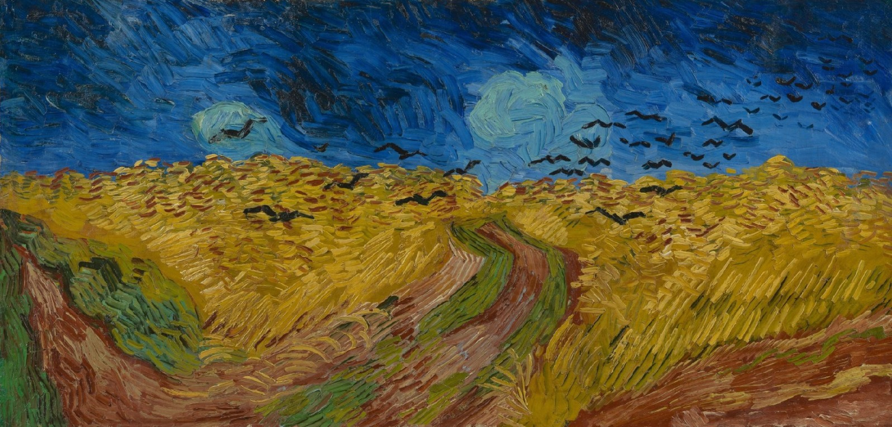

In the early years of his life, Van Gogh had no formal training in art. He first worked as an art dealer, traveling between cities and gaining exposure to different forms of art. His personal life was marked by struggles, including difficult family relationships, which eventually led him to turn to painting. He began with sketches and later embraced oil painting, focusing on rural life and the working class, a theme that would dominate much of his early work.
During his time in Belgium, Van Gogh focused heavily on drawing and began exploring darker, more muted tones. His early works reflected the harsh realities of the people he encountered, including scenes of laborers and peasants. One of his most famous early paintings, 'The Potato Eaters,' depicts a group of peasants at dinner, showing their tired, rugged faces. His desire to portray the raw humanity of these subjects set the stage for his later, more colorful works.


Van Gogh's move to Paris in 1886 marked a major turning point in his career. There, he was introduced to the Impressionist and Post-Impressionist movements, and his style underwent a dramatic transformation. The influence of artists such as Monet and Seurat can be seen in his use of brighter colors and more fluid brushstrokes. In Paris, Van Gogh’s palette brightened significantly, and he began to experiment with techniques that would define his later works, such as short, expressive brushstrokes and bold color contrasts.
After settling in Arles in 1888, Van Gogh hoped to create an artist's community. This period marked the peak of his creative output, producing some of his most iconic works. His vibrant depictions of sunflowers, the starry night skies, and the famous 'Bedroom' series reflect his deep connection to the town's landscape and his intense emotional state. However, his time in Arles was also marked by instability, culminating in the infamous incident where he cut off part of his ear after a dispute with fellow artist Paul Gauguin.


Van Gogh’s struggles with mental health were well-documented, and his time in Arles proved to be a turning point. After the ear incident, he was admitted to a mental asylum in Saint-Rémy-de-Provence, where he continued to paint. Despite his personal struggles, his creativity flourished, producing some of his most famous pieces, such as 'Starry Night.' His work from this period is marked by swirling lines and vivid color contrasts, capturing the turbulence of his emotional state while showcasing his artistic genius.
Van Gogh’s life came to a tragic end in 1890. He died at the age of 37, after suffering from a gunshot wound, which many believe was self-inflicted. During his lifetime, Van Gogh struggled with poverty and mental illness, and he sold very few paintings. It wasn't until after his death that his work gained recognition and appreciation. Today, Van Gogh is regarded as one of the most influential artists of all time, and his works continue to inspire people around the world.
